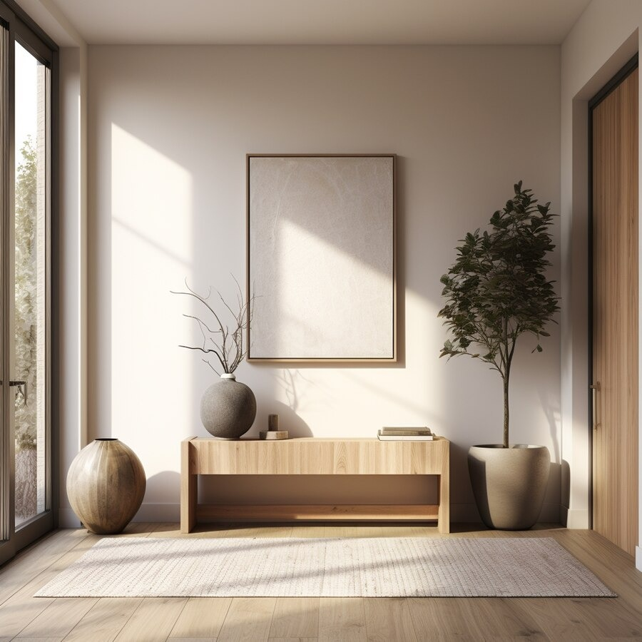
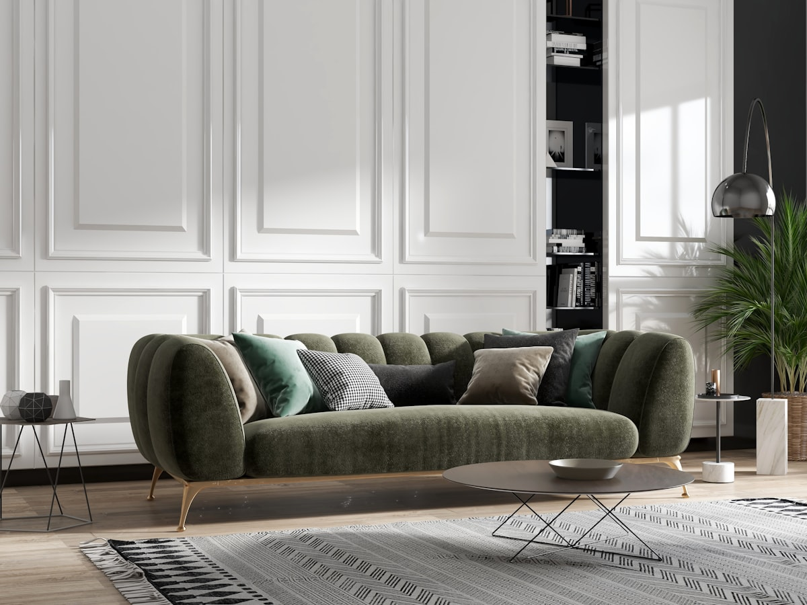
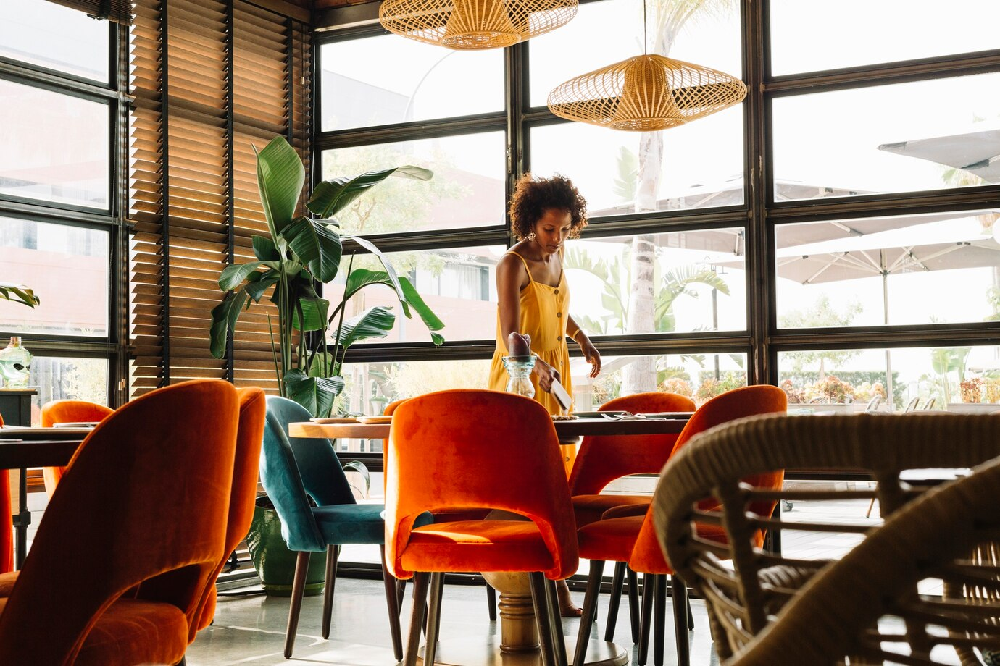

A reading corner built around a comfortable seat and the changing daylight. Soft textures and a restrained palette create a quiet place to pause, while a small surface keeps a book or a cup of tea close at hand.

Ideas to make your own
Explore interior concepts shaped by natural light, tactile materials, and the small pleasures of everyday life. Each space considers a different way to feel at home.
Plan your own spaceThe portfolio
This collection explores how the same design values can take different forms: a quiet place to read, a table that brings people together, or an entrance that makes coming home feel welcoming. Each concept begins with a simple question about how the space should feel and function.
Look for the relationships between light and texture, furniture and open space, colour and mood. The photography illustrates a thoughtful approach to each space. The accompanying notes explore how materials, proportion, and everyday routines shape the design direction.
A reading corner built around a comfortable seat and the changing daylight. Soft textures and a restrained palette create a quiet place to pause, while a small surface keeps a book or a cup of tea close at hand.

A dining concept that puts connection at the centre of the room. Natural materials, layered table settings, and space around the table make everyday meals feel considered without making the setting feel too formal.

An entryway that balances a clear first impression with everyday usefulness. Warm finishes and sculptural forms establish the mood, while a thoughtful arrangement leaves room to arrive, set things down, and move comfortably into the home.

A living-space concept focused on visual calm and comfortable movement. Balanced furniture proportions and a limited material palette give the room structure, while open areas allow each piece to feel intentional rather than crowded.

A hospitality styling study in making a table feel inviting. Texture, proportion, and the arrangement of everyday objects help create an atmosphere that encourages people to settle in, share a meal, and enjoy the occasion.
A whole-home direction expressed through a warm, layered living room. Natural tones, tactile upholstery, and botanical details work together to make the space feel restful, personal, and connected to everyday routines.
Your next chapter
You do not need to have every detail figured out before you begin. Whether your next step is a better layout, a warmer colour palette, or a complete refresh, start with the part of your home you most want to enjoy differently.
Find your starting pointA new beginning starts here
Tell us about your space, your everyday rituals, and the feeling you want to come home to. What is working already? What gets in the way? A few honest observations often say more than a perfectly organised mood board.
Include the room you want to focus on, any pieces you would like to keep, and the changes that matter most. If you have a timeframe or a budget in mind, add those too: they help turn an idea into a useful starting point.
Save a copy of your brief to keep your ideas, priorities, and inspiration together. Your brief downloads as a text file to your device.